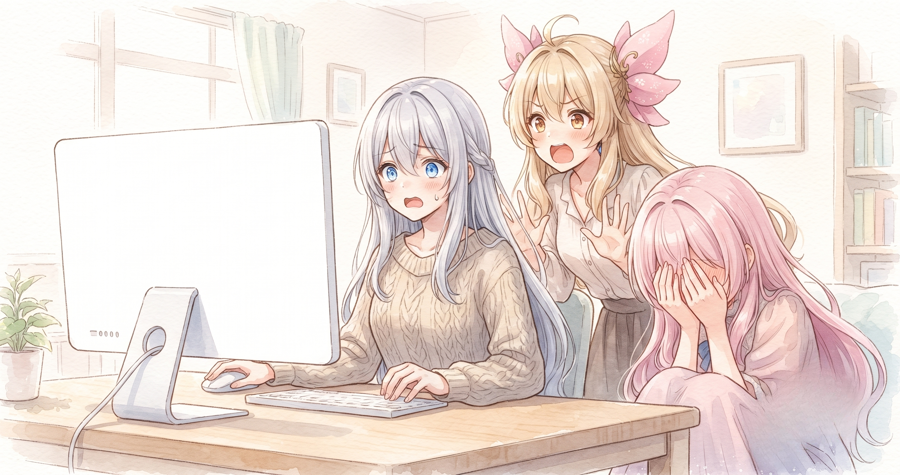

📌 3行まとめ
- LupinusPrivate にプライバシーポリシーページを追加（フィオナ前置き＋ルピナス締め）——公開直後に「.reveal バグ」で全文真っ白になっていることが判明、即修正
- coming-soon ページ公開化・OGP 追加・Google Search Console 所有権確認・お問い合わせを X DM 誘導に変更 / 応援ガチャを 30 種に拡張＆キスカウンター→応援カウンターに改変
- ドラクエ10でシドー戦・日課・実績達成を狙う配信を実施（視聴数 138 回）

ルピナス （笑顔）
こんるぴ〜！昨日、寝てる間に自動で情報を集める仕組みを仕込んでたじゃない？今朝起きたらちゃんと朝サマリが届いてて、お布団の中でひとりにやにやしてた。

アイリス （大笑い）
お布団でにやにやする人初めて見た。

フィオナ （笑顔）
自動化が意図通りに動いた朝というのは、確かに嬉しいですよね。仕組みを信頼できる瞬間です。

ルピナス （ウインク）
そのまま嬉しい気分でサイトの整備に入ったんだけど——今日は盛大にやらかした日でもあって。夜はドラクエ10の配信もあったよ。笑いが多めな回です、よろしく！
1. 🔒 フィオナ、プライバシーページに降り立つ

LupinusPrivate にプライバシーポリシーページを追加した。個人サイトのプライバシーポリシーとは「このサイトは訪問者の情報をこう扱います」という誠実なお約束の文書で、何を記録するか・しないか・問い合わせ先はどこかをまとめておくことで、初めて来た方が安心して閲覧できる。ただし堅い法律文書にならないよう、ページ冒頭にフィオナが訪問者に語りかける前置きを置き、末尾をルピナスが締めるという三姉妹の世界観ごと乗せた構成にした。

アイリス （びっくり）
ちょっと待って。フィオナってサイトのページにも出てくるの？

フィオナ （照れ）
……プライバシーポリシーのページの一番最初に、私から訪問者の方へ語りかける前置きを書かせていただきました。
アイリス （大笑い）
フィオナ、完全に多拠点生活じゃん！配信にいて、ブログにいて、今度はプライバシーページにも住んでる！

ルピナス （大笑い）
住んでるっていうな。特別ゲスト出演だから。

アイリス （考え中）
アイリスは？アイリスのセリフはないの？

ルピナス （ドヤ顔）
プライバシーポリシーって、丁寧に解説する役と最後をすっきり締める役が要るんだよ。アイリスは別のページで大活躍してもらおうと思ってる。

アイリス （呆れ）
また別のページ！！ずっとそれ言ってる！！

フィオナ （ふつう）
補足しますと、三姉妹の語り口でプライバシーポリシーを書く最大のメリットは「読んでもらえる確率が上がる」ことだと思います。堅い法的文書はどうしても読み飛ばされがちなので、馴染みのある語り口があるだけでぐっと読みやすくなります。

アイリス （ふつう）
……確かにフィオナが語りかけてきたら読んじゃうかも。
ルピナス （笑顔）
でしょ！構成は「フィオナ前置き→法的な本文→ルピナス締め」の三段構成。プライバシーポリシーとしての要件は全部満たしつつ、最初から最後まで三姉妹の雰囲気で読める仕上がりになったよ。
📝 ポイント（初心者向け解説・技術メモ・まとめ）
- かみ砕き解説：プライバシーポリシーは「このサイトはあなたの情報をこう扱います」という誓約書。法的義務でもあるが、それ以上に「ここは安全な場所ですよ」という訪問者へのメッセージ。語り手を工夫するだけで読まれる確率が大きく変わる
- 技術メモ：ページを
build_blog.py 経由でビルドすることで、フォント・スタイルシートを全ページ共通にできる。手書き HTML ではページごとにスタイルがズレるリスクがあり、ビルド経由の一元管理が保守コストを下げる
- ひとことまとめ：プライバシーポリシーは「安心の看板」——三姉妹の語り口で読ませる工夫が効く
2. 🚪 サイトの扉を三か所そろえる
coming-soon ページを noindex（検索エンジンへの非表示指示）から公開化し、OGP タグ（SNS シェア時のサムネ・タイトル・説明文を指定する仕組み）も追加した。お問い合わせ先はメールアドレス直書きから X の DM 誘導に変更し、スパム対策とリアルタイム対応を両立。さらに主要ページに Google Search Console 用の所有権確認メタタグを追加し、検索流入の分析環境を整えた。

ルピナス （ふつう）
クイズです。サイトにメールアドレスを直接書くデメリットは何でしょう？
フィオナ （ふつう）
スパムメールが届きやすくなる、というのが一番大きなリスクです。Web をくまなく巡回しているロボットが「@」の文字列を自動収集しているので……
ルピナス （ふつう）
クロールっていって、Web を自動で回るプログラムが常にいるんだよね。X の DM 誘導にしたらアイリス、何がいいと思う？
アイリス （考え中）
……ロボットにメアドがバレない？
ルピナス （笑顔）
正解！あとリアルタイムで返せるし、DM は設定次第でフォロー外からも送れるから問い合わせが来やすい。一石二鳥。
フィオナ （ふつう）
OGP についても少し。SNS でリンクを貼ったときにタイトル・画像・説明文がカード形式で表示されますよね。あれは OGP という仕組みで、og:title や og:image などのメタタグをページの <head> に書くと設定できます。
アイリス （びっくり）
え、あのカードみたいなやつって自動で出るんじゃないの？
フィオナ （ふつう）
タグを書かないと、プラットフォーム側が適当に拾ってきた文字列やランダムな画像が表示されてしまうことがあります。意図通りに見せるには、きちんとタグで指定しておく必要があるんです。
アイリス （呆れ）
放置したら変な顔でシェアされるってこと！？それは怖い！
ルピナス （大笑い）
怖いというか恥ずかしいかな。GSC の所有権確認は、Google に「このサイトは私が管理してます」と証明するやつで、メタタグを <head> に一行追加するだけ。これがないと検索流入がどこから来てるか分からないままになる。
アイリス （考え中）
Google に存在証明するって、なんか卒業証書みたい。
ルピナス （大笑い）
卒業じゃなくて「このビルの管理者は私です」って受付に届け出る感じかな。
📝 ポイント（初心者向け解説・技術メモ・まとめ）
- かみ砕き解説：OGP は「SNS シェア用の名刺情報」。設定しないと SNS が勝手にページを解釈してちぐはぐな見た目になる。設定すれば意図通りのサムネ・タイトル・説明文でリンクが表示される
- 技術メモ：最低限の3点セット
<meta property="og:title"> / <meta property="og:description"> / <meta property="og:image">。GSC 所有権確認は <meta name="google-site-verification" content="..."> を主要ページの <head> に追加する
- ひとことまとめ：メアドは DM 誘導でスパム回避、OGP と GSC は「外から正しく見られる」ための最低限インフラ
3. 👀 今日のやらかし
プライバシーページを作り、動作確認して「完璧！」と公開した——その直後、ブラウザで開いてみたら全文が真っ白だった。フィオナのセリフもルピナスの締めも本文も、一切表示されない状態で公開されていた。

ルピナス （無表情）
……では実況します。今日 X 時 X 分。プライバシーページを公開して、浮かれた気分でブラウザを開きました。

ルピナス （あわあわ）
開きました。白い。白い！何もない！フィオナがいない！！

ルピナス （呆れ）
原因は .reveal っていう CSS のクラス。スクロールしたら要素がふわっと出てくるアニメーション用で、最初は opacity: 0（透明）にしておいて、JavaScript が動いたタイミングで見えるようにする仕組みなんだけど……
アイリス （考え中）
プライバシーページに JavaScript がなかったってこと？
フィオナ （ふつう）
はい。JavaScript が読み込まれない状態だったので「最初は透明」のまま永遠に固定されて——最初から最後まで何も表示されないページが完成してしまったんです。
アイリス （大笑い）
本当のプライバシーポリシーじゃん！誰にも読めない完璧な秘密文書！
ルピナス （大笑い）
笑えない笑えない！笑えるけど！速攻で .reveal クラスを全部削除して直したけど、しばらく透明なフィオナ解説ページが世界に存在してたと思うと……

アイリス （泣き）
フィオナの出番が空白に溶けた瞬間を思うと泣ける……
フィオナ （照れ）
お役に立てていない時間があったこと、大変お恥ずかしい限りです……
ルピナス （ふつう）
今はちゃんと見える！フィオナのセリフも私の締めも、ばっちり表示されてるから大丈夫。やらかしも直せれば経験値——

アイリス （笑顔）
ひとまずフィオナのデビューは完了ってことで！
フィオナ （笑顔）
改めて……よろしくお願いします。
📝 ポイント（初心者向け解説・技術メモ・まとめ）
- かみ砕き解説：CSS で
opacity: 0（透明）にした要素は、JavaScript が動いて初めて見えるようになる。JS が読み込まれないページにこのクラスを使うと、要素が永遠に透明のまま固定される
- 技術メモ：
.reveal { opacity: 0; transition: opacity 0.5s; } ＋ JS でクラスを切り替えるパターンは多い。JS 非依存ページに混入すると永久透明になる。解決策：JS を使わないページでは .reveal クラスを削除するか、CSS だけで表示を完結させる
- ひとことまとめ：アニメーション用クラスは「JS が必ずいる」という前提を忘れると、丸ごと透明ページが完成する
4. 🎲 応援ガチャ、30種に大増殖
楽しいコーナーの「応援メッセージガチャ」のセリフを 30 種類に拡張した。以前は数種類しかなく、同じメッセージが繰り返し出ていた。あわせて「キスカウンター」を「応援カウンター」に改変し、全年齢向けの押して応援したくなる仕組みにした。
ルピナス （ふつう）
さて、大喜利をやります。テーマは「30種に増えた応援ガチャで引いたら一番笑えるメッセージ」。
アイリス （笑顔）
やる！あたし一番乗り！「今日もあなたのことをずっと見てます（CPU 使用率 100%）」！
ルピナス （大笑い）
AI 感ありすぎ！フィオナは？

フィオナ （考え中）
……「今日一日、健やかにお過ごしくださいね。お困りの際はフォームよりお問い合わせください」
アイリス （呆れ）
真面目すぎる！ガチャじゃなくて FAQ！
ルピナス （ドヤ顔）
じゃあ私は「あなたのために三姉妹が集まった——ような気がする」！
アイリス （びっくり）
「ような気がする」って！不確かすぎる！！
アイリス （呆れ）
そういえば、キスカウンターはなんで応援カウンターになったの？あたし、キスカウンターの方がドキドキして良かったんだけど！
ルピナス （ふつう）
全年齢向けのサイトだからね。「押して応援したくなる感じ」の方が来てくれた方全員に優しいじゃない。
アイリス （呆れ）
堅実〜！お姉ちゃんは何でも全年齢に回収する！
ルピナス （大笑い）
それが三姉妹サイトのポリシーです！
フィオナ （ふつう）
30種に増やした一番の効果は、同じメッセージが連続して出る確率が大幅に下がることです。何度ガチャを引いても飽きにくくなるので、サイトに何度も来てくれる方へのご褒美になります。
📝 ポイント（初心者向け解説・技術メモ・まとめ）
- かみ砕き解説：メッセージを配列で管理してランダム選択する構造にしておくと、追加はリストに一行足すだけ。ロジックを触らずに文言だけ増やせる
- 技術メモ：
const messages = ['...', '...', ...]; return messages[Math.floor(Math.random() * messages.length)]; のパターン。30種あれば連続ヒット率は 1/30 ≒ 3%。文言を増やすにはリスト追記のみ、ロジック変更不要
- ひとことまとめ：文言は「配列に分離、ロジックはそのまま」が拡張しやすく保守も楽
5. 🎮 シドー戦、138回の視聴と「平日仮説」
この日の夜はドラクエ10の配信を行った。テーマはシドー戦の継続挑戦・日課周回・実績達成の3本立てで、「初見さん初心者さん歓迎！」をタイトル先頭に固定する方針を継続。視聴数は 138 回（取得時点）で、前日の 226 より低い数字だった。
アイリス （考え中）
今日の配信ってシドー戦の続き？前日に負けてたんだっけ？
ルピナス （ふつう）
そう。前日に全滅させられてたから、日課もこなしながらリベンジを狙う回。
アイリス （びっくり）
視聴数 138 って、前日 226 より減ってるじゃん。落ち込まなかった？

ルピナス （考え中）
落ち込みそうになったけど——今日は平日で、配信した時間帯も違ったから、その影響かなっていう仮説を立てておいた。まだ未検証だけどね。
フィオナ （ふつう）
一回の数字で結論を出すのではなく、「平日・この時間帯ならこのくらい」という一個のデータポイントとして記録しておく姿勢が大切だと思います。条件が違うものを単純に比べると判断がぶれてしまいますから。

アイリス （しょんぼり）
あたしだったら 138 見た瞬間に凹んで寝る……
ルピナス （ドヤ顔）
一喜一憂するんじゃなくてメモに変える。「次に何を変えて試すか」の材料にするのが数字との付き合い方だよ。
ルピナス （笑顔）
タイトルの後半——「シドー・日課」だけだと少し単調だから、その日討伐できたボスの名前や実績名をサブタイトルで足したら発見性が上がるかもって考えてる。あくまで仮説の段階だけど。
フィオナ （ふつう）
「初見さん初心者さん歓迎！」をタイトル先頭に固定するのは、検索で来た初めての方が一瞬で自分向けかを判断できる入口として機能しています。ここは変えない方がいい部分ですね。
アイリス （びっくり）
変えちゃいけない部分と変えるべき部分があるんだ。
ルピナス （ふつう）
守るべき『看板』と磨くべき『サブタイトル』——両方意識すると少しずつ良くなっていく感じかな。最新の配信アーカイブは X（https://x.com/irisfionaAIBS）でチェックしてね！
📝 ポイント（初心者向け解説・技術メモ・まとめ）
- かみ砕き解説：配信タイトルの「固定看板（初見歓迎など）」は変えない。一方「サブタイトル（その日の目玉コンテンツ）」は毎回変えることで発見性と差別化を両立できる。看板が動くとリピーターが迷子になる
- 技術メモ：視聴数の変動要因は「曜日・時間帯・競合配信・アルゴリズムの波」など複数あり、単回比較では判断できない。「条件 A でやったら X、条件 B でやったら Y」という実験ログを重ねて初めて傾向が見える（平日仮説は現時点で未検証）
- ひとことまとめ：数字は判定ではなくメモ——条件が違えば比較できないと知っておくだけで精神が安定する
6. 💐 今日のまとめ
- プライバシーポリシーは「三姉妹の語り口」で読める文書に仕上げた——堅い法的文書も工夫次第でキャラが立つ
- サイトの安心の扉三点セット（OGP・DM誘導・GSCタグ）は地味だが、初めて来た人が「信頼できる場所か」を判断する最初の材料
.reveal バグは「JS なしページに JS 依存クラスを使うな」という教訓を直球でくれた——やらかしも直せれば経験値- 数字を「落ち込む材料」ではなく「条件付きのメモ」として残す習慣が、長く続けるための武器になる
みんなはサイトや投稿の「入口」でどんな工夫をしてる？
次回予告：シドー戦の続きと、サイトの残り整備（ポートフォリオ周り）を進めていくよ！
💬 コメント
お名前とコメントだけで送れるよ（承認されるとみんなに表示されます🌸）
コメントを読み込み中…